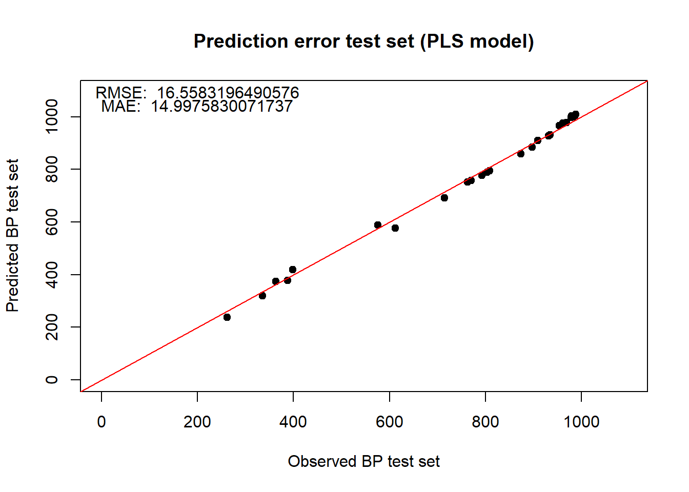

Prediction of boiling points using WikiData and Machine learning techniques
Introduction
This GitHub Page is a final product of assignment 2, requested by the course MSB1015 (Scientific Programming). The goal is to create a GitHub Page (notebook) for the following analysis. The boiling points of alkenes need to be predicted based on data from WikiData; Smiles are used to enrich the data using the rcdk package in R, afterward, machine learning is applied. See the GitHub repository for more details.
Programming language
- R
Programming apporaches
- WikiData query
- rcdk (r package)
- machine learning using caret (r package)
Workflow
The following workflow is applied, coherent to the script blocks:
Install packages
Define user settings
Set user functions
Define WikiData query call & extract data
Convert units to Kelvin
(Optional) filtering and data cleanup
Visualize raw data
Data enrichment (using rcdk)
Latent variable filtering
Data subsetting for machine learning
Machine learning (PLS model)
Machine learning (RandomForest model)
Script block 1: INSTALL PACKAGES
This block installs all packages which are required during this algorithm. It iteratively checks if they are installed, installs if needed, and load them afterward.
# Install packages if needed and load, or just load packages
if (!requireNamespace("BiocManager", quietly = TRUE))
install.packages("BiocManager", ask = F)
# Insert all packages in requiredpackages
requiredpackages <-
c("WikidataQueryServiceR","ggplot2","backports","rJava","rcdk","pls","randomForest",
"gplots","curl","data.table","caret","ggfortify","tidyverse")
for (i in requiredpackages) {
if (!requireNamespace(i, quietly = TRUE))
BiocManager::install(i, ask = F, dependencies = c("Depends", "Imports"))
require(as.character(i), character.only = TRUE)
print(i)
}## [1] "WikidataQueryServiceR"
## [1] "ggplot2"
## [1] "backports"
## [1] "rJava"
## [1] "rcdk"
## [1] "pls"
## [1] "randomForest"
## [1] "gplots"
## [1] "curl"
## [1] "data.table"
## [1] "caret"
## [1] "ggfortify"
## [1] "tidyverse"Script block 2: SETTINGS
In this script some parameters can be changed, these are located in this block. This way changing parameters is easy and robust.
# General settings
options(stringsAsFactors = F)
# Select 80% for train, 20% for test
trainingTestRatio = 0.8
linearAlkanesOnly = 0 # 1 = yes; 0 = no.
# Setting seed to keep consistent results
set.seed(1)
# The variable 'query' contains the query call; make sure the query text is within the "'" and "'".
query = '
SELECT DISTINCT ?comp ?compLabel ?bp ?bpUnitLabel ?CC WHERE {
?comp wdt:P31/wdt:P279* wd:Q41581 ;
p:P2102 [
ps:P2102 ?bp ;
psv:P2102/wikibase:quantityUnit ?bpUnit
] .
?comp wdt:P233 ?CC .
SERVICE wikibase:label { bd:serviceParam wikibase:language "[AUTO_LANGUAGE],en". }
}
'Script block 3: FUNCTIONS
To assess the performance of the models at later hand, these functions have been made. The Root Mean Squared Error (RMSE) and Mean Absolute Error (MAE) are often used to compare models of similar function.
# Root Mean Squared Error
RMSE = function(yact, ypred){
sqrt(mean((yact - ypred)^2))
}
# Mean Absolute Error
MAE = function(yact, ypred){
mean(abs(yact - ypred))
}Script block 4: QUERY CALL
This block gets the data from WikiData. As stated before, the goal is to extract boiling points from alkenes. This query call extracts the following pieces of information: unique alkene name, boiling point, boiling point unit and concatenated smiles. It is essential the concatenated smiles are extracted, as these will be used later to enrich the data. All this information is stored in a dataframe called ‘dataObj’.
# Set endpoint for wikidata
endpoint = "https://query.wikidata.org/bigdata/namespace/wdq/sparql"
# Get the results
queryResults = query_wikidata(query)## 134 rows were returned by WDQSScript block 5: BOILINGPOINT UNIT CONVERSION
As the query extracts all boiling points, several different units might be used for a single alkene. Thus, these need to be checked and converted to Kelvin, as this is a international unit. However, during the development of this script only two other units were found, Celsius and Fahrenheit. This means when another unit is introduced, the algorithm cannot detect it and will use this unit as outlier. To overcome this, after conversion all the samples containing a ‘Kelvin’ unit will be used, while others are removed from the dataset. Finally, ‘dataObj’ is subsetted to contain the alkene name, boiling point and concatenated smiles.
#C to Kelvin:
# 0°C + 273.15 = 273,15K
indexCelciusResults = which(queryResults$bpUnitLabel=="degree Celsius")
for( i in 1:length(indexCelciusResults)){
queryResults[indexCelciusResults[i],]$bp = (queryResults[indexCelciusResults[i],]$bp + 273.15)
queryResults[indexCelciusResults[i],]$bpUnitLabel = "kelvin"
}
#F to Kelvin:
# (0°F − 32) × 5/9 + 273.15 = 255,372K
indexFahrenheitResults = which(queryResults$bpUnitLabel=="degree Fahrenheit")
for( i in 1:length(indexFahrenheitResults)){
queryResults[indexFahrenheitResults[i],]$bp= (queryResults[indexFahrenheitResults[i],]$bp - 32) * (5/9) + 273.15
queryResults[indexFahrenheitResults[i],]$bpUnitLabel = "kelvin"
}
#additional failsafe if other metrics than Celsius and Fahrenheit are added (other metrics are removed)
queryResults = queryResults[which(queryResults$bpUnitLabel=="kelvin"),]
# Make backup
queryResultsBACKUP = queryResults
# Finalize data structure
queryResults = data.frame(queryResultsBACKUP$compLabel, queryResultsBACKUP$bp, queryResultsBACKUP$CC)
names(queryResults) = c("Comp","bp","CC")Script block 6: FILTERS AND OUTLIER HANDLING
The extracted data can be filtered on linear alkenes only (no branches), this can be changed in settings. It simplifies the model as it does not need to take the branching in account. After evaluation of the data (which happens in block 7) it was observed two alkenes deviated from the observable trend line. This was because one alkene (hexatriacontane) contained boiling point data under pressurized condition, altering the boiling point compared to the rest. The second alkene (Dooctacontane) has a lower boiling point temperature for no clear reason; when looking this up in ChemSpider, it is observed the boiling point is 684.9±18.0 °C while WikiData states 608.7 °C. The two alkanes are locally corrected as these need looking in to.
if(linearAlkanesOnly == 1){
queryResults = queryResults[-grep(pattern = "\\(",x = queryResults$CC),]
}
# hexatriacontane 770.15 K (497 C); in wikidata under pressurised condition!
if(!length(queryResults$Comp=="hexatriacontane")==0){
queryResults$bp[queryResults$Comp=="hexatriacontane"] = 770.15
}
# Dooctacontane 958.05 K (684.9 C); IN WIKIDATA AS 881.85 K
if(!length(queryResults$Comp=="Dooctacontane")==0){
queryResults$bp[queryResults$Comp=="Dooctacontane"] = 958.05
}
# phytane 612.32 K (322.4 C); IN WIKIDATA AS 442.65 K at 760 torr which should be (322.4 C) 612.32 K.
if(!length(queryResults$Comp=="phytane")==0){
queryResults$bp[queryResults$Comp=="phytane"] = 612.32
}Script block 7: DATA OVERVIEW
After correction / filtering the data, it is visualized in this block. It indicates an exponential relationship between boiling point and length of the alkene (based on the carbon atom backbone). This is a indication that a ‘simple’ model should be able to pick up the variables involved to determine the boiling point. The histogram indicates the boiling point frequency distribution, ideally, this would be normally distributed. It can be observed that it is not normally distributed; and should be taken in account.
# Get a general idea of how the data looks; disregarding branch effects; amount of C in compound linked to BP
CClength_crude = nchar(gsub(pattern = "\\)",replacement = "",x = gsub(pattern = "\\(",replacement = "",x = queryResults$CC)))
plotCClength = CClength_crude[order(CClength_crude)]
plotBP = queryResults$bp[order(CClength_crude)]
# Should result in a exponential function-like graph
plot(plotCClength,plotBP,main = "Carbon - boilingpoint relation",xlab = "Amount of carbon atoms in alkene",ylab = "Boiling point (Kelvin)") # Show how the data is distributed (focussing on bp)
hist(queryResults$bp,breaks=20,main = "Boiling point frequency distribution",xlab = "Boiling point (Kelvin)",ylab = "Frequency")Script block 8: DATA ENRICHMENT
To build a model, variables are required to reflect the selected molecule. Several aspects can be derived from the concatenated smiles directly, such as the amount of (C)arbon and (H)ydrogen atoms. However, when looking into molecules many more things can be stated, such as electronegativity or 3d-structure. The RCDK package in R uses concatenated smiles to determine several molecular descriptors. This information can be stored in a data frame per alkene molecule, which becomes the input for machine learning. This is possible as the output y (boiling point) is extracted from WikiData, and variables v(1)..v(n) are the obtained molecular descriptors. This dataframe is called ‘descs’, containing many variables.
smilesParser <- get.smiles.parser()
descCategories <- get.desc.categories()
for( i in 1:length(queryResults$CC)){
# Get smiles from result query and add information
selectedSmilesData <- parse.smiles(queryResults$CC[i])[[1]]
convert.implicit.to.explicit(selectedSmilesData)
#formula <- get.mol2formula(selectedSmilesData,charge=0)
# Store the found information
#queryResults$formula[i] = {formula} # S4 object cannot be transferred nicely
#queryResults$mass[i] = formula@mass
#queryResults$string[i] = formula@string
#queryResults$charge[i] = formula@charge
# M/z values
#queryResults$isotopes[i] = {get.isotopes.pattern(formula,minAbund=0.1)}
# Fingerprint? values
#queryResults$fingerprint[i] = {get.fingerprint(selectedSmilesData = selectedSmilesData)}
# Create a dataframe which contains all info possible to extract using the descriptors
rowSmileDescData = queryResults$Comp[i]
for(o in 1:5){
dn <- get.desc.names(descCategories[o])
rowSmileDescData = cbind(rowSmileDescData, eval.desc(selectedSmilesData, dn))
}
# This is done now as it will break if descriptors change (amount)
if(exists("dfSmilesDescData")){
dfSmilesDescData[i,] = rowSmileDescData
}else{
dfSmilesDescData = rowSmileDescData
}
}
# Make backup from data, easy for testing (resetting)
mydataBACKUP = dfSmilesDescData
dfSmilesDescData = mydataBACKUP
# Remove component names (as it will mess up futher processing)
dfSmilesDescData = dfSmilesDescData[,-1]Script block 9: LATENT VARIABLE FILTER
Because ‘descs’ contains many variables, the curse of dimensionality is a phenomena stating the amount of variables is bigger than the amount of samples, leading to infinite results (cannot predict). To account for this several (crude) steps are taken, first all columns containing NAs are removed. Second, the descriptors are correlated with the boiling point to indicate correlated variables. At last, the top 15 (abs) correlating variables are selected and kept while all other variables are removed. As there are around 130 samples and 15 variables, a prediction is possible. A dataframe called ‘my_data’ is created containing: the amount of carbons in the backbone n, the 15 top correlated variables v(1..15) and the expected output y.
# Remove NAs n stuff
dfSmilesDescData <- dfSmilesDescData[, !apply(dfSmilesDescData, 2, function(x) any(is.na(x)) )]
dfSmilesDescData <- dfSmilesDescData[, !apply( dfSmilesDescData, 2, function(x) length(unique(x)) == 1 )]
if(T){
# Correlate the descriptors with the boiling point; if these are linked, they should add some info
corMatrix = cor(dfSmilesDescData , queryResults$bp)
corMatrix = as.data.frame(corMatrix[order(abs(corMatrix),decreasing = T),])
# select first 15 components:
componentNames = rownames(corMatrix)[1:15]
dfSmilesDescData = dfSmilesDescData[,match(colnames(dfSmilesDescData), x = componentNames)]
}
# - BLOCKED - Old method, keepin this inside for further reference
if(F){
dfSmilesDescData = mydataBACKUP
dfSmilesDescData = dfSmilesDescData[,-1]
# crude way to extract 'important' features based on correlation
dfSmilesDescData <- dfSmilesDescData[, !apply(dfSmilesDescData, 2, function(x) any(is.na(x)) )]
dfSmilesDescData <- dfSmilesDescData[, !apply( dfSmilesDescData, 2, function(x) length(unique(x)) == 1 )]
r2 <- which(cor(dfSmilesDescData)^2 > .9, arr.ind=TRUE) # when keeping this high, the prediction improves
r2 <- r2[ r2[,1] > r2[,2] , ]
dfSmilesDescData <- dfSmilesDescData[, -unique(r2[,2])]
}
# - BLOCKED -
# should contain nAtomLAC; the amount of c atoms
if(!exists("dfSmilesDescData$nAtomLAC")){
dfSmilesDescData = cbind(dfSmilesDescData, dfSmilesDescData$nAtomLAC)
names(dfSmilesDescData)[dim(dfSmilesDescData)[2]] = "n"
}else{
names(dfSmilesDescData)[names(dfSmilesDescData)=="dfSmilesDescData$nAtomLAC"] = "n"
}
# Store resulting input file in dfInputML; as it is the input for ML
dfInputML = dfSmilesDescData
# Finish prepare data
# Add and define the 'to be predicted' column
indexBoilPoint = ncol(dfInputML)+1
dfInputML[,indexBoilPoint] = queryResults$bp
names(dfInputML)[indexBoilPoint] = 'BoilPoint'
# Ordered data is required later
dfInputML = dfInputML[order(dfInputML$BoilPoint),]Script block 10: DATA SUBSETTING FOR MACHINE LEARNING
To create robust (machine learning) models several aspects need to be accounted for. Overfitting is the process of fitting the model perfectly to this dataset, while another dataset might not fit that well. A balance must be struck between robustness and minimal error. This is why the dataset is split into a training and test set, by evaluating the model performance on both sets, the overfitting and robustness van be evaluated. This block of code splits the data in a test and training set, using a density-biased random sampling approach. As stated before, the samples are not uniformly distributed, thus, a random sampling approach will select more samples with higher boiling points, shifting the model focus to higher boiling points rather than uniform.
# Define variables
sample.length = length(dfInputML[,1])
# Higher probability to select lower (underrepresented) samples;
# improves range of model, increases fit and prediction power.
# Ranges from 1 (select) to 0.5 (chance)
sample.biasprob = 1 - 1:sample.length /max(sample.length )/2
# Make data objects
samples.upper = sample(sample.length , floor(length(dfInputML[,1])*trainingTestRatio),prob = sample.biasprob ) #get all unique samples (not frequecies) and sample 80%
#plot(samples.upper[order(samples.upper)])
samples.total = (1:length(dfInputML[,1])) # all unique samples (not frequecies)
samples.lowerl = samples.total[!samples.total %in% samples.upper] #which samples are sampled
# Subset data
data.train = dfInputML[samples.upper,]#contains all upper
data.train = as.data.frame(data.train)
data.test = dfInputML[samples.lowerl,]#contains all lower
data.test = as.data.frame(data.test)
# Remove nas
data.train=data.train[!is.na(data.train[,1]),]
data.test=data.test[!is.na(data.test[,1]),]
# Create standardized object
xNN = data.train[,-(indexBoilPoint)]
yNN = data.train[,indexBoilPoint]
dat = data.frame(xNN, y = yNN)
# Remove samples with in datasets n < 1
data.train = dat[dat$n>0,]
yactual.train = data.train$y
data.test = data.test[data.test$n>0,]
yactual.test = data.test$BoilPointScript block 11: PLS MODEL
A PLS model was created using the Caret package in R, which is a framework for a variety of machine learning approaches. (10) k-fold cross validation was applied to increase the model performance as it estimates the best latent variables which should be used. When evaluating the model’s performance, RMSE and MAE is used in addition to a predict vs actual plot. These are calculated for training and test set, to indicate robustness and overfitting.
# Define training control method; 10 - k - cross validation
train_control <- trainControl(method="cv", number=10)
# Train the model
model <- train(y~., data=data.train, trControl=train_control, method="pls")
# Find out what model is best
print(model)## Partial Least Squares
##
## 106 samples
## 16 predictor
##
## No pre-processing
## Resampling: Cross-Validated (10 fold)
## Summary of sample sizes: 96, 97, 96, 96, 94, 95, ...
## Resampling results across tuning parameters:
##
## ncomp RMSE Rsquared MAE
## 1 79.17496 0.9106916 68.99771
## 2 55.89763 0.9587178 43.19882
## 3 16.73711 0.9964133 13.26975
##
## RMSE was used to select the optimal model using the smallest value.
## The final value used for the model was ncomp = 3. # Find out most important variables
Varimportance = varImp(model)
cat(paste("Best model fit with", model$bestTune, "latent components \n"))## Best model fit with 3 latent components cat(paste("Latent components:",paste(rownames(Varimportance$importance)[order(decreasing = T,Varimportance$importance$Overall)][1:model$bestTune[1,]],collapse = ", "),"\n"))## Latent components: VAdjMat, Kier1, khs.ssCH2 plot(Varimportance, main="Varible importance in PLS model \n")
# Predict test set
ypredCARET.pls.test <- model %>% predict(data.test)
# Root mean squared error
RMSE.pls.test = RMSE(yactual.test, ypredCARET.pls.test)
RMSE.pls.test## [1] 16.55832 # Results in: 16.55
# Mean absolute error
MAE.pls.test = MAE(yactual.test, ypredCARET.pls.test)
MAE.pls.test## [1] 14.99758 # Results in: 14.99
# Plot ypred vs yactual of test data
plot(yactual.test, ypredCARET.pls.test,
xlab="Observed BP test set", ylab="Predicted BP test set",
pch=19, xlim=c(0, ceiling(max(yNN)*1.1)), ylim=c(0, ceiling(max(yNN)*1.1)),main="Prediction error test set (PLS model)")
abline(0,1, col='red')
text(200,ceiling(max(yNN)*1.1),paste("RMSE: ",RMSE.pls.test))
text(200,ceiling(max(yNN)*1.1)-50,paste("MAE: ",MAE.pls.test))
# Predict training data; check overfitting
ypredCARET.pls.train <- model %>% predict(data.train)
# Root mean squared error
RMSE.pls.train = RMSE(yactual.train, ypredCARET.pls.train)
RMSE.pls.train## [1] 16.0855 # Results in: 16.08
# Mean absolute error
MAE.pls.train = MAE(yactual.train, ypredCARET.pls.train)
MAE.pls.train## [1] 12.61364 # Results in: 12.61
# Plot ypred vs yactual of training data
plot(yactual.train, ypredCARET.pls.train,
xlab="Observed BP train set", ylab="Predicted BP train set",
pch=19, xlim=c(0, ceiling(max(yNN)*1.1)), ylim=c(0, ceiling(max(yNN)*1.1)),main="Prediction error training set (PLS model)")
abline(0,1, col='red')
text(200,ceiling(max(yNN)*1.1),paste("RMSE: ",RMSE.pls.train))
text(200,ceiling(max(yNN)*1.1)-50,paste("MAE: ",MAE.pls.train))
Evaluation of PLS model
The 10-fold cross-validated PLS model used 3 latent variables (VAdjMat, Kier1, khs.ssCH2) to estimate the boiling point within 16 degrees kelvin, ranging between (rounded) 200 to 1100 degrees kelvin. The mean deviation is approximated to be 16 / (1100 - 200) x 100 = 1.8%.
It can be observed the test RMSE is 16.55 and MAE 14.99; training RMSE is 16.08 and MAE 12.61.
If overfitting did happen, the training error would be significantly lower than the test error, which is not the case.
The training error is slightly lower than the test error, indicating the model fits dynamics of the data.
The MAE is comparable, indicative of no under- or overfitting.
By examining the plots and comparing the direction of error, it can be seen as the model balances the prediction; underestimating at first, then overestimating, then underestimating and at last overestimating. This might be induced by nonlinear effects which are not fully captured in the selected variables.
Script block 12: RANDOM FOREST MODEL
As the caret package includes many different machine learning methods, a random forest model has been included. Random forest has been chosen as this method has been proven powerful and can capture linear as well as nonliner effects. It can be observed the Random forest model’s performance is better than the PLS model. However, both models can be improved by tuning the parameters and obtaining better molecular descriptors.
# Define training control method; 10 - k - cross validation
train_control <- trainControl(method="cv", number=10)
# Train the model
model <- train(y~., data=data.train, trControl=train_control, method="rf")
# Find out what model is best
print(model)## Random Forest
##
## 106 samples
## 16 predictor
##
## No pre-processing
## Resampling: Cross-Validated (10 fold)
## Summary of sample sizes: 94, 97, 95, 96, 96, 95, ...
## Resampling results across tuning parameters:
##
## mtry RMSE Rsquared MAE
## 2 9.299976 0.9986546 7.147196
## 9 8.698776 0.9988164 6.703487
## 16 8.807106 0.9988158 6.798295
##
## RMSE was used to select the optimal model using the smallest value.
## The final value used for the model was mtry = 9. # Find out most important variables - BLOCKED - this doesnt work for rf
if(F){
Varimportance = varImp(model)
cat(paste("Best model fit with", model$bestTune, "latent components \n"))
cat(paste("Latent components:",paste(rownames(Varimportance$importance)[order(decreasing = T,Varimportance$importance$Overall)][1:model$bestTune[1,]],collapse = ", "),"\n"))
plot(Varimportance, main="Varible importance in rf model \n")
}
# Predict test set
ypredCARET.rf.test <- model %>% predict(data.test)
# Root mean squared error
RMSE.rf.test = RMSE(yactual.test, ypredCARET.rf.test)
RMSE.rf.test## [1] 8.927311 # Results in: 8.92
# Mean absolute error
MAE.rf.test = MAE(yactual.test, ypredCARET.rf.test)
MAE.rf.test## [1] 5.725729 # Results in: 5.72
# Plot ypred vs yactual of test data
plot(yactual.test, ypredCARET.rf.test,
xlab="Observed BP test set", ylab="Predicted BP test set",
pch=19, xlim=c(0, ceiling(max(yNN)*1.1)), ylim=c(0, ceiling(max(yNN)*1.1)),main="Prediction error test set (RandomForest model)")
abline(0,1, col='red')
text(200,ceiling(max(yNN)*1.1),paste("RMSE: ",RMSE.rf.test))
text(200,ceiling(max(yNN)*1.1)-50,paste("MAE: ",MAE.rf.test)) # Predict training data; check overfitting
ypredCARET.rf.train <- model %>% predict(data.train)
# Root mean squared error
RMSE.rf.train = RMSE(yactual.train, ypredCARET.rf.train)
RMSE.rf.train## [1] 3.916698 # Results in: 3.91
# Mean absolute error
MAE.rf.train = MAE(yactual.train, ypredCARET.rf.train)
MAE.rf.train## [1] 2.741942 # Results in: 2.74
# Plot ypred vs yactual of training data
plot(yactual.train, ypredCARET.rf.train,
xlab="Observed BP train set", ylab="Predicted BP train set",
pch=19, xlim=c(0, ceiling(max(yNN)*1.1)), ylim=c(0, ceiling(max(yNN)*1.1)),main="Prediction error training set (RandomForest model)")
abline(0,1, col='red')
text(200,ceiling(max(yNN)*1.1),paste("RMSE: ",RMSE.rf.train))
text(200,ceiling(max(yNN)*1.1)-50,paste("MAE: ",MAE.rf.train))
Evaluation of RandomForest model
The 10-fold cross-validated RandomForest model used 9 predictors to estimate the boiling point within 8.3 degrees kelvin, ranging between (rounded) 200 to 1100 degrees kelvin. The mean deviation is approximated to be 8 / (1100 - 200) x 100 = 0.9%.
It can be observed the test RMSE is 8.92 and MAE 5.72; training RMSE is 3.91 and MAE 2.74.
The the training error is lower than the test error, indicative of slight overfitting. However, the test set RMSE is 8.92, which is lower than the PLS model; indicative that this model outperforms the PLS model. Comparing the MAE indicates slight overfitting.
By examinating the plots and comparing the direction of error, it can be seen this prediction seems spot on with slight uniform error. Comparing this model to the PLS model a clear difference can be seen, which is likely caused by the nonlinear predictive power of random forest.